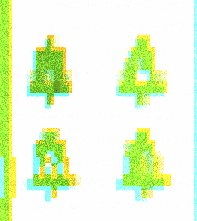
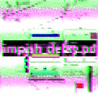

▼ arte ▲
MOÇO

MOÇO foi lançado como single (juntamente com uma versão karaoke) e é uma música para um amigo que me faz falta há demasiado tempo.
Publicado a 4 de Julho de 21.
Envio-te esta música para formalizar que estou partido.
Morri de saudades tuas todos os dias, desde o eclipse até amanhã.
Este ghost não se admite.
Ouvir no bandcamp >>
Ouvir no spotify >>
Ouvir no soundcloud >>
Também realizei/produzi o videoclipe desta música com a inestimável ajuda das minhas amizades Manuel Barros, Miguel Amorim e Bernardo de César e com o apoio do Teatro Universitário do Porto e da CASA COMUM - U.P. A lista completa de créditos para o MV está disponível na página do TUP.
Este filme faz parte da selecção oficial do festival Color's of Love.
Ver o videoclipe no Youtube>> / Subtítulos en español >> / English subtitles >> / Letra original >>
☷T'AI☰
Com nome dado a partir do hexagrama 11 e do meu próprio: ☷T'AI☰ é um álbum que emerge quando a [minha] vida se instala para celebrar o meu primeiro T-versário e as vésperas do 25 de Abril.Com uma pitada de auto-absorção e votos de um comunismo gay do espaço, luxuoso e totalmente automatizado.
Publicado a 24 de Abril de 2021
Os vídeos usados no spotify para este álbum utilizam filmagens gentilmente cedidas por Demy e MARXelo.
Ouvir no bandcamp >>
Ouvir no souncloud >>
Ouvir no spotify >>
Ouvir na apple music >>
doravante (um tributo a ドラヤチ)

doravante é um tributo aos recomeços.
O nascimento de dorayachi [ドラヤチ ] em 2010 marcou o início da minha jornada na música. O primeiro projecto musical ao qual me dediquei inteiramente, a primeira banda com quem toquei ao vivo.
dorayachi inspiravam-se em artistas de rock e na cena cultural japonesa que foi o ponto de ligação entre os seus primeiros membros.
Agora, 8 anos após o fim da banda, doravante é uma reflexão, uma reinterpretação e uma nova perspectiva sobre as músicas do álbum nunca lançado de dorayachi: TOBU [飛ぶ].
É também um tributo à amizade.
A uma banda cuja composição mudou tanto, onde alguns dos seus membros tocaram um instrumento musical pela primeira vez e onde fazer música era muitas vezes só uma óptima desculpa para "anhar".
Publicado Às 9:38 (GMT) do dia 20 de Março de 2021.
Ouvir o álbum no bandcamp >>
Ouvir o álbum no spotify >>
Ouvir o álbum no itunes >>
corvo rosa e o ritmo fantasma
 Gravei em 2014 uma série de trabalhos em guitarra
eléctrica quando decidi aprender a usar uma DAW.
Cada uma dessas músicas foi completada numa única noite (enquanto a minha mãe trabalhava fora de casa), e o
que resta hoje delas são os ficheiros .mp3 gravdos há mais de seis anos.
Gravei em 2014 uma série de trabalhos em guitarra
eléctrica quando decidi aprender a usar uma DAW.
Cada uma dessas músicas foi completada numa única noite (enquanto a minha mãe trabalhava fora de casa), e o
que resta hoje delas são os ficheiros .mp3 gravdos há mais de seis anos.
Todas elas são [ainda] dedicadas ao Diogo
Publicado a 20 de Janeiro de 2021
estímulo.miragem
 estímulo.miragem é um
álbum de seis faixas. Cada uma dura precisamente 10 minutos, totalizando uma hora de música.
A sua estrutura remete para a de um hexagrama de I Ching (六十四卦), formado por um bāguà (八卦) superior e um
inferior, cada um destes composto por três linhas.
É uma reflexão demorada sobre um evento curto, ajudada por um conjunto restrito de regras e pelo hexagrama
31 ䷞ (o estímulo / a influência / o cortejar / a comunhão).
Ao longo do álbum as faixas tornam-se cada vez mas estrtuturadas, rítmicas e tonais. Algumas estão
bipartidas numa divisão ruidosa e uma melódica.
estímulo.miragem é um
álbum de seis faixas. Cada uma dura precisamente 10 minutos, totalizando uma hora de música.
A sua estrutura remete para a de um hexagrama de I Ching (六十四卦), formado por um bāguà (八卦) superior e um
inferior, cada um destes composto por três linhas.
É uma reflexão demorada sobre um evento curto, ajudada por um conjunto restrito de regras e pelo hexagrama
31 ䷞ (o estímulo / a influência / o cortejar / a comunhão).
Ao longo do álbum as faixas tornam-se cada vez mas estrtuturadas, rítmicas e tonais. Algumas estão
bipartidas numa divisão ruidosa e uma melódica.Publicado às 22:23 (GMT) do dia 21 de Dezembro de 2018.
Os vídeos no spotify deste álbum foram generosamente feitos e oferecidos por girflux (ギ).
Ouvir o álbum no bandcamp >>
Ouvir o álbum no soundcloud >>
Ouvir o álbum no spotify >>
ghostwritten
 ghostwritten foi um trio de
math-rock/post-rock baseado na cidade do Porto desde Novembro de 2013 até Agoso de 2018. Formação final:
Tiago Lêdo (guitarra), Dany Campos (guitarra) e Daniel Andrade (bateria). Antigos membros: Filipe Oliveira
(baixo), Afonso Aguiar (baixo).
ghostwritten foi um trio de
math-rock/post-rock baseado na cidade do Porto desde Novembro de 2013 até Agoso de 2018. Formação final:
Tiago Lêdo (guitarra), Dany Campos (guitarra) e Daniel Andrade (bateria). Antigos membros: Filipe Oliveira
(baixo), Afonso Aguiar (baixo). Ouvir a música Mother Tongue no Reverbnation >>
dorayachi
 dorayachi [ドラヤチ] foi uma banda de rock de
inspiração japonesa, baseada na cidade do Porto entre 2010 e 2013. Tocaram em vários eventos de cultura
japonesa e convenções de anime. Formação final: Sara Gomes — Arya Urubunny (voz), Tiago Lêdo — 空のリズム
(guitarra), Dany Campos — Dany (guitarra), Daniel Andrade (bateria), Filipe Oliveira — Sora (baixo). Antigos
membros: Sara Rocha — Hachi (baixo), João — Tsume (bateria), João Lobo (bateria).
dorayachi [ドラヤチ] foi uma banda de rock de
inspiração japonesa, baseada na cidade do Porto entre 2010 e 2013. Tocaram em vários eventos de cultura
japonesa e convenções de anime. Formação final: Sara Gomes — Arya Urubunny (voz), Tiago Lêdo — 空のリズム
(guitarra), Dany Campos — Dany (guitarra), Daniel Andrade (bateria), Filipe Oliveira — Sora (baixo). Antigos
membros: Sara Rocha — Hachi (baixo), João — Tsume (bateria), João Lobo (bateria).nanoparticular
 Nanoparticular é uma instalação digital
interactiva desenvolvida na hackathon de 5 dias EMERGENCE@UP, com o objectivo de dar a conhecer os
fantásticos poderes e potenciais perigos das nanopartículas metálicas. Equipa: Marte Verde Baqueiro, Marte
Correira, Francisca 'Kika' Gnçalves, Tiago Lêdo, António Sousa.
Nanoparticular é uma instalação digital
interactiva desenvolvida na hackathon de 5 dias EMERGENCE@UP, com o objectivo de dar a conhecer os
fantásticos poderes e potenciais perigos das nanopartículas metálicas. Equipa: Marte Verde Baqueiro, Marte
Correira, Francisca 'Kika' Gnçalves, Tiago Lêdo, António Sousa.Apresentado pela primeira vez a 27 de Setembro de 2019, na Casa Comum da Reitoria da Universidade do Porto.
a vague sense of presence
 a vague sense of presence é uma
simbiose entre os sons individuais e o seu campo aural abrangente. Cada um dxs compositorxs tomou a
liberdade de escolher o seu caminho dentro da composição generativa, culminando num trabalho que reflecte
assim as suas particularidades. Na conexão das partes, o caminho converge num ponto central.
Como colectivo, as partes compõe o todo. Ainda que presente e simbolizada por cada uns dos monitores, a
individualidade é diluida e do volume implícito na estrtutura emerge espaço de comunhão e comtemplação,
imerso no som. Cada composição e as transições entre si são generativas, fazendo uso de sistemas
probabilísticos e da compatibilidade inter-composição encontrada, compondo assim a obra final.
Uma instalação do COLECTIVO 「大音量コンピューター」 (loudvolumecomputer): Gonçalo Santos, ギ (Gui Gaspar/girflux), Ivo Santos, Joana
Rodrigues, Tiago Lêdo, Luís Arandas, Marcelo Sousa, Paulo Teixeira e Pedro Sarmento).
a vague sense of presence é uma
simbiose entre os sons individuais e o seu campo aural abrangente. Cada um dxs compositorxs tomou a
liberdade de escolher o seu caminho dentro da composição generativa, culminando num trabalho que reflecte
assim as suas particularidades. Na conexão das partes, o caminho converge num ponto central.
Como colectivo, as partes compõe o todo. Ainda que presente e simbolizada por cada uns dos monitores, a
individualidade é diluida e do volume implícito na estrtutura emerge espaço de comunhão e comtemplação,
imerso no som. Cada composição e as transições entre si são generativas, fazendo uso de sistemas
probabilísticos e da compatibilidade inter-composição encontrada, compondo assim a obra final.
Uma instalação do COLECTIVO 「大音量コンピューター」 (loudvolumecomputer): Gonçalo Santos, ギ (Gui Gaspar/girflux), Ivo Santos, Joana
Rodrigues, Tiago Lêdo, Luís Arandas, Marcelo Sousa, Paulo Teixeira e Pedro Sarmento).Primeira apresentação pública a 36 de Outubro de 2018 no FESTIVAL SEMIBREVE na cidade de Braga. Este trabalho foi parcialmente apoiado pelo MM-FEUP.
Ouvir a versão linear no bandcamp >>
Ver o teaser no Vimeo >>
Ver o making of no Vimeo >>
leave a message~
 Leave a Message~ é uma instalação interactiva que
utiliza por base um patch de Pure Data e um telefone modificado. Ao pegar no auscultador, ss utilizadorxs
são instruídxs a deixar uma mensagem a seguir ao sinal sonoro, tendo alguns segundos para deixar uma
mensagem de voz e terminar a transmissão. X próximx utilizadorx a pegar no auscultador do telefone ouvirá a
mensagem de voz deixada pelx utilizadorx anterior e terá, de seguida, a oportunidade de deixar gravada a sua
própria mensagem. No final da demonstração,a totalidade das mensagem de voz são analisadas através de um
programa de fala-para-texto e é gerada uma nuvem com as palavras mais utilizadas nas mensagens. Equipa: Ana
Ferreira, Elaine Aguilar, José Pedro Silva, Roberto 'William' Nóbrega, Tiago Lêdo.
Leave a Message~ é uma instalação interactiva que
utiliza por base um patch de Pure Data e um telefone modificado. Ao pegar no auscultador, ss utilizadorxs
são instruídxs a deixar uma mensagem a seguir ao sinal sonoro, tendo alguns segundos para deixar uma
mensagem de voz e terminar a transmissão. X próximx utilizadorx a pegar no auscultador do telefone ouvirá a
mensagem de voz deixada pelx utilizadorx anterior e terá, de seguida, a oportunidade de deixar gravada a sua
própria mensagem. No final da demonstração,a totalidade das mensagem de voz são analisadas através de um
programa de fala-para-texto e é gerada uma nuvem com as palavras mais utilizadas nas mensagens. Equipa: Ana
Ferreira, Elaine Aguilar, José Pedro Silva, Roberto 'William' Nóbrega, Tiago Lêdo.Este projecto foi apresentado em Janeiro de 2018 na Faculdade de Engenharia da Universidade do Porto.
Watch the video on Vimeo >>
Este patch está disponível no GitHub >>
câmara
 Câmara é uma instalação
interactiva, um quarto para explorar e reflctir sobre os estados de consciência através das fases do sono.
Nesta instalação foi construída uma cama embutindo sensores no seu interior para recolher dados sobre a
posição dxs participantes enquanto estxs observam uma janela projectada. Através desta janela observa-se um
exterior urbano nocturno que se misturará mais ou menos rapidamente com um cenário onírico consoante o tempo
de permanência na cama e na ausência de movimentos. Equipa: Daniel Machado, Gonçalo Santos, Elaine Aguilar,
Marcelo Valle, Miguel Soares e Tiago Lêdo.
Câmara é uma instalação
interactiva, um quarto para explorar e reflctir sobre os estados de consciência através das fases do sono.
Nesta instalação foi construída uma cama embutindo sensores no seu interior para recolher dados sobre a
posição dxs participantes enquanto estxs observam uma janela projectada. Através desta janela observa-se um
exterior urbano nocturno que se misturará mais ou menos rapidamente com um cenário onírico consoante o tempo
de permanência na cama e na ausência de movimentos. Equipa: Daniel Machado, Gonçalo Santos, Elaine Aguilar,
Marcelo Valle, Miguel Soares e Tiago Lêdo.Apresentada pela primeira vez em Janeiro de 2018 na Escola Secundária Carlos Amarante na cidade de Braga. Esta apresentação pública foi apoia pelo programa BragaMediaArts.
flormiga

Flormiga é um projecto de tecnologia digital e música interactiva com o objectivo de promover uma relação sensível entre crianças e a natureza através de plantas-sónicas. Este projecto é o objecto da Dissertação de Mestrado Music with Plants: Cultivating Bonds Between Grade-Schoolers and Nature through Sound Design e encontra-se em desenvolvimento em colaboração e com o apoio do programa educativo da Orquestra Jazz de Matosinhos. Este projecto foi aparesentado na 21st Conference Consciousness Reframed 2019 — Sentient States: Bio-mind and Techno-nature
Ler a Dissertação >>
Ver teaser vídeo >>
Este patch está disponível no Github >>
Ouvir o sound design no Soundcloud >>
anita caça fantasmas
 Anita Caça Fantasmas é um patch
interactivo em MAX/MSP baseado em EVP (fenómenos de voz electrónica) que convida xs participantes a
desvendar xs fantasmas de uma divisão assombrada. Este patch usa análise sonora em tempo-real para disparar
eventos, gerar som e responder xs participantes de maneira assutadora e lúdica.
Anita Caça Fantasmas é um patch
interactivo em MAX/MSP baseado em EVP (fenómenos de voz electrónica) que convida xs participantes a
desvendar xs fantasmas de uma divisão assombrada. Este patch usa análise sonora em tempo-real para disparar
eventos, gerar som e responder xs participantes de maneira assutadora e lúdica.Ver demo em vídeo no Vimeo >>
Este patch está disponível no GitHub >>
toban djan
 Toban Djan é um patch de som
generativo emk MAX/MSP que apresenta uma paisagem sonora suburbana à beira-mar imaginada. Uma experiência
solitária numa paragem de autocarro na companhia de uma voz masculina e uma voz feminina que falam uam
impressão de uma língua este-asiática, de uma mosca e de uma sensação de ansiedade constante. Foi concebida
para ambientes espacializados utilizando Ambisonics e foi apresentada em configurações de 6 e de 9
colunas.
Toban Djan é um patch de som
generativo emk MAX/MSP que apresenta uma paisagem sonora suburbana à beira-mar imaginada. Uma experiência
solitária numa paragem de autocarro na companhia de uma voz masculina e uma voz feminina que falam uam
impressão de uma língua este-asiática, de uma mosca e de uma sensação de ansiedade constante. Foi concebida
para ambientes espacializados utilizando Ambisonics e foi apresentada em configurações de 6 e de 9
colunas.Este patch foi exibido como parte da instaçaão a vague sense of presence e gravado como a faixa a vague sense of self-awareness.
Ouvir a vague
sense of self awareness no bandcamp >>
Este patch está disponível no GitHub >>
shell search
Shell Search é um projecto de demo de videojogo criado pela equipa The Smart Ponies. Uma colaboração entre a Faculdade de Engenharia e a Faculdade de Belas Artes da Universidade do Porto. Desenho de som e implementação em Wwise: Ana Rita Torres, Joana Rodrigues e Tiago Lêdo. Programação: João Ferreira, Inês Proença, João Costa e Lázaro Costa. Modelos 3D e design: Catarina Neves, Hugo Sá e Morries Eigi.Apresentado em Junho de 2018.
impish_delay.pd
Impish_Delay.pd é um efeito de delay para guitarra eléctrica construido com Pure Data e magia. Um delay ping-pong stereo com opção de controlo de pitch shifting para as repetições. Os valores dos efeitos podem ser controlados automáticamente em tempo-real com leitura da intensidade e do ataque.Este patch está disponível no GitHub >>
Ver a demo no Vimeo >>
sardões
 Sardões é uma série fotográfica divertida sobre
sardões, a vida da duna e o Verão passado.
Sardões é uma série fotográfica divertida sobre
sardões, a vida da duna e o Verão passado. Publicada online a 29 de Setembro de 2020.
outono
 Outono é uma curta documental inspirada por
uma haiku outonal de Matsuo Basho. Um filme de ギ (Gui Gaspar/girlflux), Pedro Sarmento e Tiago Lêdo. Um desafio do
projecto Citadcs.
Outono é uma curta documental inspirada por
uma haiku outonal de Matsuo Basho. Um filme de ギ (Gui Gaspar/girlflux), Pedro Sarmento e Tiago Lêdo. Um desafio do
projecto Citadcs.Apresentado em Novembro de 2018.
direcção de fotografia

Director de Fotografia das seguintes curtas-metragens: Anexo, Dor e
Extra-Corpo, escritos e realizados por Tiago Colaço; Click! realizado por
Joana Sousa, Tiago Colaço e Tiago Lêdo; Ao Salvamento! realizado por Ricardo Leite;
Halo — Black Box videoclip realizado por Fábio Castro, Tiago Lêdo e Américo Oliveira.
ana anonymous

Ana Anonymous é uma curta de animação escrita e com locução de Ana Ferreira; storyboard, desenho,
animação, música e edição de Tiago Lêdo; apresentada como uma instalação e online com a ajuda de Roberto
'William' Nóbrega, Elaine Aguilar e José Pedro Silva.
Primeira apresentação pública em Novembro de
2017, na Faculdade de Engenharia da Universidade do Porto.
o dildotauro de lide

O Dildotauro de Lide é o resultado da Residência Artística No Entulho, promovida pela Artworks,
para a qual fui seleccionado pela Pedreira, lugar onde foi também exibido.
Apresentado como uma instalação-performance, divida em três espaços (1) mostra de vídeo composta pelo videoclip da música MOÇO;
capturas que fiz durante a residência; e a vídeo-performance com o mesmo nome da apresentação;
(2) performance (3) objectos trabalhados, encontrados, inacabados e abandonados da residência.
Nesta residência contei com o acompanhamento inestimável da Hilda de Paulo; com a produção artística da Francisca Marques e da Lola Rodrigues,
o registo vídeo do Bruno Lança, e o apoio à produção e à construção de toda a equipa da Artworks
(Carlos, André, Pedro, Emanuel, Luís, Hélder, Carlos, António, entre muites outres); com a hospitalidade e atenção do pessoal da Pedreira;
com o apoio à produção do Teatro Universitário do Porto e o apoio técnico do Eduardo Brandão e com o trabalho tecnico-artístico das minhas amigas
Mariana Leite Soares (direcção técnica/luz), Joana Rodrigues (sonoplastia), Tomás Paula Marques (apoio à criação e ao vídeo) e Teresa Antunes (apoio à luz).
Videos disponíveis em breve ...>>
theia

theia é um testemunho sobre a destruição como impulso criador através do conto do grande impacto. Um texto, voz e música originais por mim para Pó-de-TUP, a série de podcasts do TUP.
Publicado a 3 de Fevereiro de 2021 em Pó-de-TUP, CASA COMUM U.Porto.
mono
 Performer e assistente de produção no filme MONO: um filme experimental com direcção artística e encenção de
Joana Mont'Alverne e interpretação dxs alunxs do Curso de Iniciação à Interpretação do TUP.
Performer e assistente de produção no filme MONO: um filme experimental com direcção artística e encenção de
Joana Mont'Alverne e interpretação dxs alunxs do Curso de Iniciação à Interpretação do TUP.Estreia a 13 de Dezembro de 2020 no Cinema Passos Manuel no Porto.
estímulo, miragem
O meu texto original, voz e música em Estímulo, Miragem — a versão portuguesa do texto introdutório do
meu trabalho musical homónimo — apresentada no Pó-de-TUP, a série de podcasts do Teatro Universitário do Porto
apoiada pela Casa Comum da
Universidade do Porto.